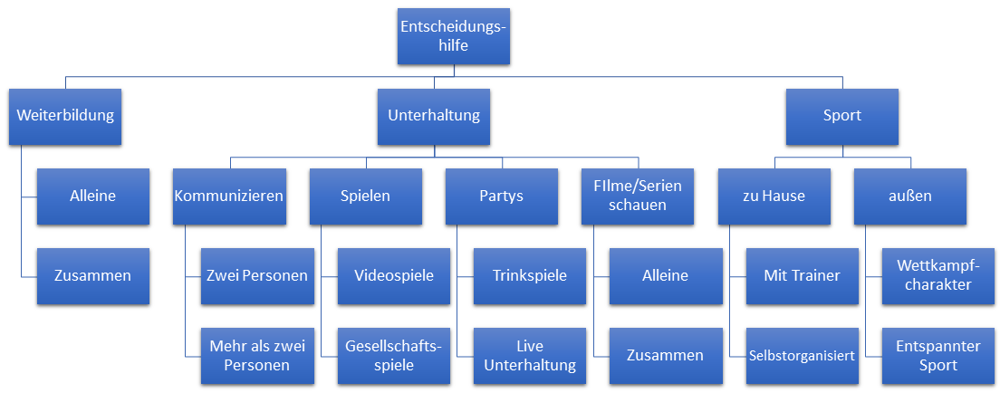

Erstellen einer Entscheidungshilfe zur Pflege von sozialen Kontakten
Ein Projekt im Rahmen von Managing Technological Change
Inhaltsverzeichnis
Motivation
Aufgrund der strengen Ausgangsbeschränkungen und der immer noch anhaltenden Kontaktbeschränkung fällt es vielen Menschen zunehmend schwerer, ihre sozialen Kontakte zu pflegen oder neue Kontakte zu knüpfen. Die Folge können starke Einsamkeitsgefühle bis hin zu Depressionen sein. Auch Freundschaften können daran kaputt gehen.
Ziel des Projektes ist es, gezielt Technologien vorzustellen, die es ermöglichen die räumlichen Grenzen zwischen Personen zu überwinden und dadurch auch während Kontaktbeschränkungen die Pflege von sozialen Kontakten ermöglichen. Um das zu erreichen, sollte ein Quiz entwickelt werden, das auf einem Entscheidungsbaum basiert. Ergebnis des Quiz sind bestimmte Use Cases. Diese Use Cases wurden von einer weiteren Gruppe genauer behandelt. So wurden Personas erstellt, Nutzwertanalysen durchgeführt und schließlich konkrete Technologien beschrieben. Es wurde beschlossen, das Quiz, zusammen mit den konkreten Technologien für die jeweiligen Use Cases als eine Webapp im Internet zu hosten. Auf der Über-Seite dieser Webapp soll der dem Quiz zugrundeliegende Entscheidungsbaum, sowie die Entwicklung Webapp genauer beschrieben werden. Außerdem soll kurz auf einige Interessante verwendete Technologien eingegangen werden.
Der Entscheidungsbaum
Im obigen Bild ist der fertige Entscheidungsbaum zu sehen. Zu Beginn wurde sich für eine Aufteilung der Pfade in die drei Bereiche „Weiterbildung“, „Unterhaltung“ und „Sport“ entschieden.
Weiterbildung umfasst verschiedene Bereiche. Dazu zählen unter anderem Onlinekurse und Sprachkurse. Um diese Bereiche zu untergliedern, wird am nächsten Knoten zwischen Weiterbildung „alleine“ oder „zusammen“ unterschieden.
Der zweite Kindknoten der Wurzel trägt den Namen „Unterhaltung“. Dieser spaltet sich anschließend in die Bereiche „Kommunizieren“, „Gemeinsam Spielen“, „Partys“ und „Filme und Serien schauen“.
Der Bereich „Kommunizieren“ beschreibt Aktivitäten, bei denen die reine Kommunikation von Personen im Vordergrund steht, auch bei zeitgleichen anderen Aktivitäten. Die Unterteilung erfolgt in Gruppen mit einer Größe von zwei Personen und einer von mehr als zwei Personen. Der Grund dafür ist, dass Technologien berücksichtigt werden sollen, die speziell für die Kommunikation in der Gruppe entwickelt wurden.
Der Bereich „Gemeinsam Spielen“ unterscheidet zwischen „Videospielen“ und „Gesellschaftsspielen“. Als Gesellschaftsspiele werden auch Kartenspiele wie Rommé oder Schnauz verstanden.
Der Bereich „Party“ gliedert sich in „Trinkspiele“ und „Live Unterhaltung“ auf. Mit Live Unterhaltung sind beispielsweise verschiedene YouTube Konzerte gemeint.
Der letzte Pfad der Wurzel beschreibt die Aktivität "Sport". Die erste Unterscheidung ist hierbei, Sport zu Hause und Sport im Freien.
Für Sport zu Hause gibt es die Möglichkeit zur Unterstützung durch einen Trainer. Dementsprechend sind die beiden Use Cases dieses Pfades, Sport zu Hause mit Trainer und selbstorganisiertem Sport zu Hause.
Für Sport im Freien wird zwischen einem stark auf Wettkampf fokussiertem Sport und lockerem Sport unterschieden. Grund dafür ist, dass beim Sport mit Wettkampfcharakter beispielsweise eine genaue Datenerfassung notwendig ist. Hingegen ist beim entspannten Sport eher das Erlebnisgefühl entscheidend.
Umsetzung als Webapp
Um die Entscheidungshilfe möglichst einfach und zugänglich zu gestalten, wurde beschlossen sie in Form einer Webapp im Internet zu Hosten. Dadurch lässt sich die Entscheidungshilfe unabhängig von Gerät, Betriebssystem und Webbrowser ohne Installation bequem online nutzen.
Design
Um ein ansprechendes und mordernes Design zu schaffen, wurde auf eine CSS-Vorlage zurückgegriffen, deren Farben auf die der FAU angepasst wurden. Für die Icons wurden die von Google zur Verfügung gestellten Material Icons verwendet.
Firebase
Für das Hosten der Website wird das Google Tool Firebase verwendet. Firebase ermöglicht neben einigen anderen Funktionen das kostenlose Hosten von Webseiten. Es wurde sich für Firebase entschieden, da im Team bereits Erfahrungen mit dem Hosten von statischen Webseiten mit Firebase vorhanden waren. Außerdem lässt sich durch die Verwendung von Firebase die Webapp leicht um weitere Features wie eine Integration von Google Analytics erweitern.
Visual Studio Code
Zum Erstellen der für die Webapp benötigten Quelldateien wurde der Codeeditor Visual Studio Code verwendet. Die Vorteile von VS Code waren für uns vor allem die hohen individuellen Anpassbarkeit, das ansprechende Design und das integriete powershell Terminal.
Nunjucks
Nunjucks ist eine Template Engine. Template Engines ermöglichen das Unterteilen des Quellcodes in kleinere Teile und das individuelle Zusammenfügen dieser zu gültigen HTML Dateien mit einm Terminalbefehl. Durch Nunjucks war es zum Beispiel möglich, die Kopfzeile in ein sogenanntes Partial auszulagern und sie in jede Unterseite einzubinden. Änderte sich nun etwas an der Kopfzeile, mussten diese Änderungen nicht für alle Unterseiten wiederholt werden, da die selbe (nun geänderte) Datei für alle Unterseiten eingebunden werden konnte.
Github
GitHub ist die weltweit führende Softwareentwicklungsplatform und ermöglicht das kollaborative Entwickeln von Software auf verschiedenen Geräten. GitHub ermöglicht es, dass der Stand des Softwareprojekts auf allen Geräten identisch ist. Außerdem ist es durch GitHub möglich, bei göberen Fehlern auf die letzte funktionierende Version "zurückzurollen". Für dieses Projekt wird GitHub vor allem dafür verwendet, den Quellcode online zur Verfügung zu stellen.